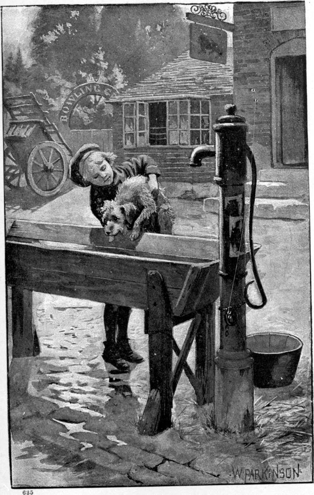

Travelling on in vague hope, meeting with kindness enough to keep him alive, but getting no employment, sleeping in what shelter he could find, and never missing the shelter he could not find, for the weather was exceptionally warm for the warm season, he came one day to a village where the strangest and hardest experience he ever encountered awaited him. What part of the country he was in, or what was the name of the village, he did not know. He seldom asked a question, seldom uttered word beyond a polite greeting, but kept trudging on and on, as if the goal of his expectation were ever drawing nigher. He felt no curiosity as to the names of the places he passed through. Why should the names of towns and villages strung on a road to nowhere in particular, interest him? He did, however, long afterward, come to know the name of this village, and its topographical relations: the place itself was branded on his brain.

He entered it in the glow of a hot noon, and had walked nearly through it without meeting any one, for it was the dinner-hour, and savoury odours filled the air, when a little girl came from a neat house, and ran farther down the street. He was very tired, very dusty, had eaten nothing that day, had begun to despair of work, and was wishing himself clear of the houses that he might throw himself down. But something in the look of the child made him quicken his weary step as he followed her. He overtook her, passed her, and saw her face. Heavens! it was Maly, grown wonderfully bigger! He turned and caught her up in his arms. She gave a screech of terror, and he set her down in keenest dismay. Finding that he was not going to run away with her, she did not run farther from him than to safe parleying distance.
“You bad boy!” she cried; “you’re not to touch me! I will tell mamma!”
“Why, Maly! don’t you know me?”
“No, I don’t. You are a dirty boy!”
“But, Maly!—”
“My name is not Maly; it’s Mary; and I don’t know you.”
“Have you forgotten Clare, Maly?—Clare that used to carry you about all day long?”
“Yes; I have forgotten you. You’re a dirty, ragged beggar-boy! You’re a bad boy! Boys with holes in their clothes are bad boys.—Nursie told me so, and she knows everything! She told me herself she knew everything!”
She gave another though milder scream: involuntarily, Clare had taken a step toward her, with his hand in his pocket, searching, as in the old days when she cried, for something to give her. But, alas, his pockets were now as empty as his stomach! there was nothing in them—not even a crumb saved from a scanty meal! While he was yet searching, the little child, his heart’s love—if indeed it was she—stooped, gathered a handful of dust, and threw it at him. The big boy burst into tears. The child mocked him for a minute, and when Clare looked up again, drying his eyes with a rag, she was gone.
He felt no resentment; love, old memories, his strange gentleness, and pity for Maly and Maly’s mother, saved him from it. The child was big and plump and rosy, but oh, how fallen from his little Maly! And, her child grown such, the mother was poor indeed, though up in the dome of the angels! If she did not know the change in her, it was the worse, for she could not help! Clare, like most of my readers, had not yet learned to trust God for everything. But he was true to Maly. Miserable over her backsliding, he said to himself that evil counsellors were more to blame than she.
“Did she know me at all?” he pondered; “or has she forgot me altogether?”
He began to doubt whether the girl was really Maly, or one very like her. About half an hour after, he met a poor woman with a bundle on her bowed back, who gave him a piece of bread. When he had eaten that, he began to doubt whether he had met any little girl. He remembered that he had often come to himself, as he wandered along the road, to find he had been lost in fancies of old scenes or imaginary new ones; waked up, he did not at once realize himself a poor lad on the tramp for work he could not find: his conceptions were for a time stronger than the things around him. He was thereupon comforted with the hope that he had not in reality seen Maly, but had imagined the whole affair. How was it possible, though, that he should imagine such horrible things of his little sister? On the other hand, was it not more possible for a fainting brain to imagine such a misery, than for the live child to behave in such a fashion? Every day for many days he tormented himself with like reasonings; but by degrees the occurrence, whether fancy or fact, receded, and he grew more conscious of tramping, tramping along. He grew also more hopeless of getting work, but not more doubtful that everything was right. For he knew of nothing he had done to bring these things upon him.
His quiet content never left him. At the worst pinch of hunger and cold, he never fell into despair. I do not know what merit he had in this, for he was constituted more hopeful and placid than I ever knew another. What he had merit in was, that not for a hungry boy’s most powerful temptation, something to eat, would he even imagine himself doing what must not be done. He would not lead himself into temptation. Thus he pleased the Power—let me rather say, ten times more truly—the Father from whom he came.